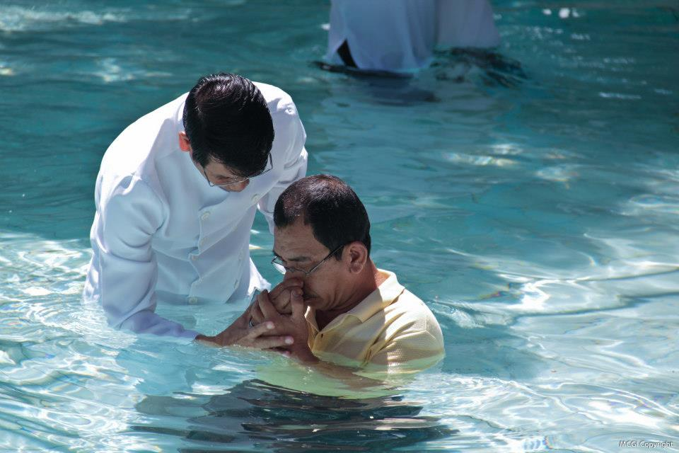
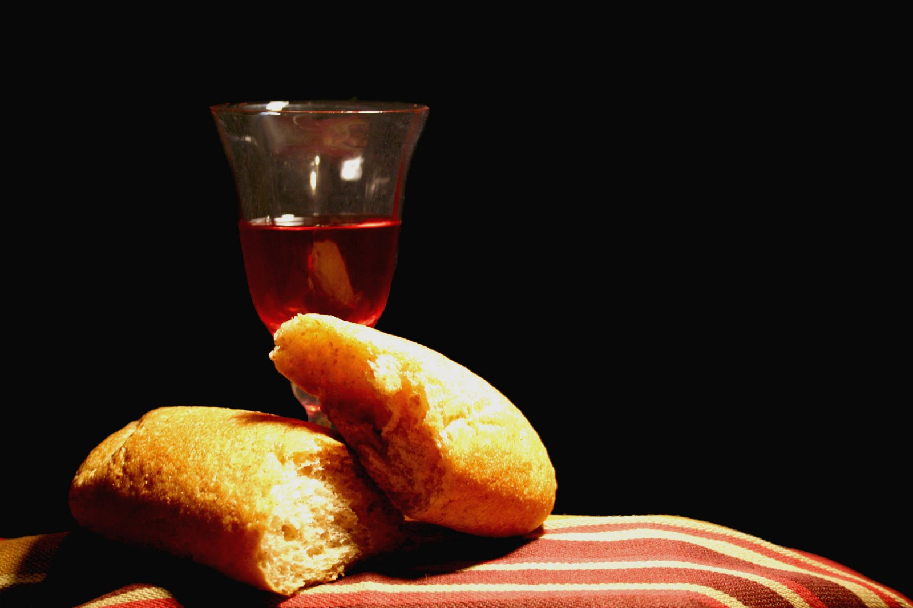

„За нас“
Христијанска Црква "Божји Глас" е основана во 1998
година кога група верници од баптистичка црква започнуваат
локална заедница во скопската населба Кисела Вода, така
продолжувајќи ја еден и пол вековната традиција на евангелските
цркви во Македонија. Во 2000 година заедницата прераснува во
самостојна.
Христијанска Црква "Божји Глас" е дел од сеопштата
Христова Црква со цел ширење на Божјото царство
и во прославувањето на Неговото име. Најважната улога е
објавувањето на Радосната вест дека Исус Христос умре за
простување на нашите гревови и дека секој којшто ќе ја прифати
Неговата жртва со вера ќе биде спасен и ќе има вечен живот.
Таа цел црквата ја исполнува со одржување богослужби и молитви,
евангелизирање и воспоставување и духовно хранење на христијаните
како и јакнење на нивното единство.
Црквата ги поттикнува и поткрепува членовите да му служат
на Христос. Обезбедува пасторска грижа и презема социјални
активности. Црквата ја води тимско водство, а служи поголема
група квалификувани верници кои проповедаат и вршат други служби.
Освен неделната Богослужба и неделното училиште за деца,
други служби се: молитвениот час и Библиското проучување
секоја среда, младинската служба во сабота, некако и ред други
служби за одредена група луѓе.
Oбреди кои црквата ги извршува се:
Крштевањето кое се врши со потопување во вода,
во името на Бог: Таткото, Синот и Светиот Дух. Се крштеваат само оние
лица што ја исповедале својата лична вера во Исус Христос, нашиот Спасител
и Господ.

Господовата вечера (причест) во која учествуваат
сите христијани кои ја разбираат и прифаќаат Христовата жртва.

Црквата започна мисиски станици во Охрид 2006 и во Прилеп 2007 година.